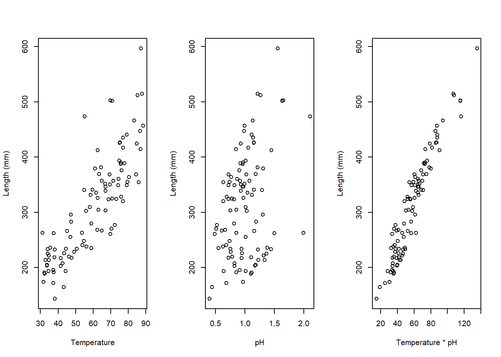
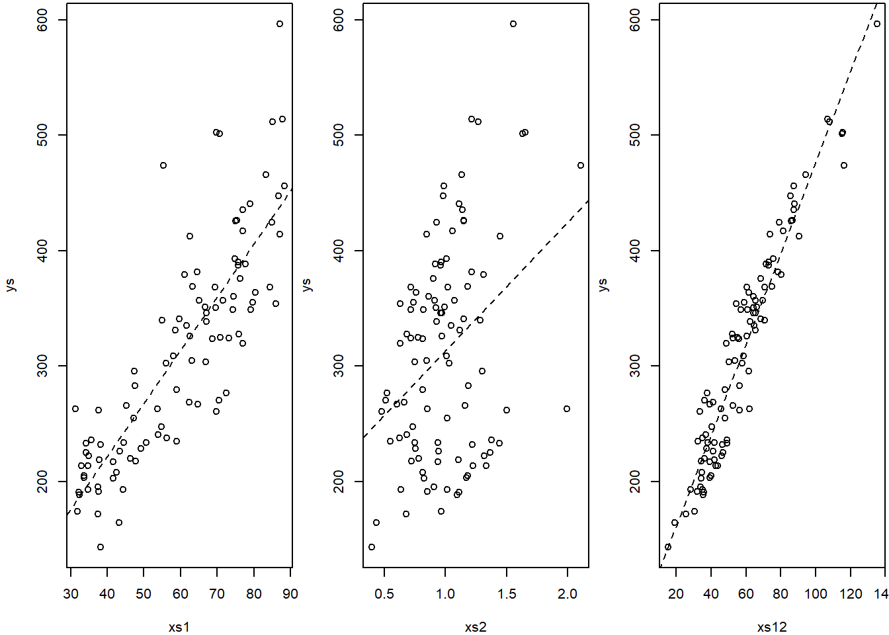

Chapter 12 Interactions between continous covariates
The examples in previous chapters considered interactions between variables, where at least one of the variables was a factor. This was for convenience, not for necessity, and interactions can occur also across strictly continuous variables. An example follows. Imagine we are interested in modelling the length of a fish species as a function of water temperature temp and pH.
We make up some example data below. Note in passing if those were real values for some water pH… all the fish would probably be dissolved!
#--------------------------------------------------------
#Interactions
#### With continous covariates
#--------------------------------------------------------
#sample size
set.seed(121)
n=100
#get a response variable
xs1=runif(n,30,90)
#get a second variable
xs2=rgamma(n,10,10)
#define the linear predictor
ys=20+2*xs1-4*xs2+3*xs1*xs2+rnorm(n,2)
#to make it easier
xs12=xs1*xs2
par(mfrow=c(1,3))
plot(xs1,ys,ylab="Length (mm)",xlab="Temperature")
plot(xs2,ys,ylab="Length (mm)",xlab="pH")
plot(xs12,ys,ylab="Length (mm)",xlab="Temperature * pH")
We can fit different models to such data, namely those that consider just the xs1 (temperature), just the xs2 (pH), or even just a new variable called xs1xs2, the product between pH and temperature (temperature \(\times\) pH), and those with both variables with and without the interaction.
Note that the variable xs1xs2 is just the product of the main effects, and as we will exemplify below, fitting that product alone is equivalent to fitting the interaction term alone.
Models without the interaction term
#-----------------------------------
#models without the interaction term
mx1x2=lm(ys~xs1+xs2)
mx1=lm(ys~xs1)
mx2=lm(ys~xs2)Models with the interaction term
#-----------------------------------
#models with interaction
#just the interaction term
mI=lm(ys~xs1:xs2)
#same as just the interaction term
mI.b=lm(ys~xs12)
#model with main effects and interaction
mx1x2I=lm(ys~xs1+xs2+xs1:xs2)
#same as mx1x2I
mx1x2I.b=lm(ys~xs1*xs2)To begin with, check what we commented above is true. Models mx1x2I and mx1x2I.b are equivalent,
##
## Call:
## lm(formula = ys ~ xs1 + xs2 + xs1:xs2)
##
## Residuals:
## Min 1Q Median 3Q Max
## -2.7590 -0.6134 0.1005 0.6850 2.5857
##
## Coefficients:
## Estimate Std. Error t value Pr(>|t|)
## (Intercept) 23.21760 1.22479 18.956 < 2e-16 ***
## xs1 1.97682 0.02030 97.368 < 2e-16 ***
## xs2 -5.06833 1.09787 -4.617 1.21e-05 ***
## xs1:xs2 3.01992 0.01876 160.986 < 2e-16 ***
## ---
## Signif. codes: 0 '***' 0.001 '**' 0.01 '*' 0.05 '.' 0.1 ' ' 1
##
## Residual standard error: 0.9462 on 96 degrees of freedom
## Multiple R-squared: 0.9999, Adjusted R-squared: 0.9999
## F-statistic: 3.272e+05 on 3 and 96 DF, p-value: < 2.2e-16##
## Call:
## lm(formula = ys ~ xs1 * xs2)
##
## Residuals:
## Min 1Q Median 3Q Max
## -2.7590 -0.6134 0.1005 0.6850 2.5857
##
## Coefficients:
## Estimate Std. Error t value Pr(>|t|)
## (Intercept) 23.21760 1.22479 18.956 < 2e-16 ***
## xs1 1.97682 0.02030 97.368 < 2e-16 ***
## xs2 -5.06833 1.09787 -4.617 1.21e-05 ***
## xs1:xs2 3.01992 0.01876 160.986 < 2e-16 ***
## ---
## Signif. codes: 0 '***' 0.001 '**' 0.01 '*' 0.05 '.' 0.1 ' ' 1
##
## Residual standard error: 0.9462 on 96 degrees of freedom
## Multiple R-squared: 0.9999, Adjusted R-squared: 0.9999
## F-statistic: 3.272e+05 on 3 and 96 DF, p-value: < 2.2e-16and mI and mI.b are equivalent.
##
## Call:
## lm(formula = ys ~ xs1:xs2)
##
## Residuals:
## Min 1Q Median 3Q Max
## -66.780 -19.984 1.668 19.739 57.329
##
## Coefficients:
## Estimate Std. Error t value Pr(>|t|)
## (Intercept) 82.7735 7.4909 11.05 <2e-16 ***
## xs1:xs2 3.9363 0.1196 32.90 <2e-16 ***
## ---
## Signif. codes: 0 '***' 0.001 '**' 0.01 '*' 0.05 '.' 0.1 ' ' 1
##
## Residual standard error: 27.28 on 98 degrees of freedom
## Multiple R-squared: 0.917, Adjusted R-squared: 0.9161
## F-statistic: 1083 on 1 and 98 DF, p-value: < 2.2e-16##
## Call:
## lm(formula = ys ~ xs12)
##
## Residuals:
## Min 1Q Median 3Q Max
## -66.780 -19.984 1.668 19.739 57.329
##
## Coefficients:
## Estimate Std. Error t value Pr(>|t|)
## (Intercept) 82.7735 7.4909 11.05 <2e-16 ***
## xs12 3.9363 0.1196 32.90 <2e-16 ***
## ---
## Signif. codes: 0 '***' 0.001 '**' 0.01 '*' 0.05 '.' 0.1 ' ' 1
##
## Residual standard error: 27.28 on 98 degrees of freedom
## Multiple R-squared: 0.917, Adjusted R-squared: 0.9161
## F-statistic: 1083 on 1 and 98 DF, p-value: < 2.2e-16Now, we plot the single variable models
#ploting the data and (single variable) models
par(mfrow=c(1,3),mar=c(4,4,0.2,0.2))
plot(xs1,ys)
abline(mx1,lty=2)
plot(xs2,ys)
abline(mx2,lty=2)
plot(xs12,ys)
abline(mI,lty=2)
Note that if we ignore the interaction, we make the wrong conclusion, we conclude that xs2 has the wrong effect compared to reality: it seems to have a positive influence, when we know that influence is negative! This happens if we ignore the relevant interaction term, irrespective of wether we consider the xs2 as the single predictor or jointly with xs1
##
## Call:
## lm(formula = ys ~ xs1 + xs2)
##
## Residuals:
## Min 1Q Median 3Q Max
## -67.854 -6.369 0.761 7.561 52.010
##
## Coefficients:
## Estimate Std. Error t value Pr(>|t|)
## (Intercept) -156.08567 8.34374 -18.71 <2e-16 ***
## xs1 5.11738 0.09208 55.57 <2e-16 ***
## xs2 164.10708 5.20386 31.54 <2e-16 ***
## ---
## Signif. codes: 0 '***' 0.001 '**' 0.01 '*' 0.05 '.' 0.1 ' ' 1
##
## Residual standard error: 15.49 on 97 degrees of freedom
## Multiple R-squared: 0.9735, Adjusted R-squared: 0.973
## F-statistic: 1782 on 2 and 97 DF, p-value: < 2.2e-16##
## Call:
## lm(formula = ys ~ xs2)
##
## Residuals:
## Min 1Q Median 3Q Max
## -161.03 -80.04 11.24 63.49 221.62
##
## Coefficients:
## Estimate Std. Error t value Pr(>|t|)
## (Intercept) 201.58 30.27 6.659 1.61e-09 ***
## xs2 111.57 29.18 3.824 0.000231 ***
## ---
## Signif. codes: 0 '***' 0.001 '**' 0.01 '*' 0.05 '.' 0.1 ' ' 1
##
## Residual standard error: 88.34 on 98 degrees of freedom
## Multiple R-squared: 0.1299, Adjusted R-squared: 0.121
## F-statistic: 14.62 on 1 and 98 DF, p-value: 0.0002307When we look at the model that really makes sense here - i.e. the true model that we know generated the data - we get the right decisions for all the terms in the model: xs1 has a positive effect and xs2 has a negative effect in the response, with a significant positive effect on the interaction between the two.
##
## Call:
## lm(formula = ys ~ xs1 + xs2 + xs1:xs2)
##
## Residuals:
## Min 1Q Median 3Q Max
## -2.7590 -0.6134 0.1005 0.6850 2.5857
##
## Coefficients:
## Estimate Std. Error t value Pr(>|t|)
## (Intercept) 23.21760 1.22479 18.956 < 2e-16 ***
## xs1 1.97682 0.02030 97.368 < 2e-16 ***
## xs2 -5.06833 1.09787 -4.617 1.21e-05 ***
## xs1:xs2 3.01992 0.01876 160.986 < 2e-16 ***
## ---
## Signif. codes: 0 '***' 0.001 '**' 0.01 '*' 0.05 '.' 0.1 ' ' 1
##
## Residual standard error: 0.9462 on 96 degrees of freedom
## Multiple R-squared: 0.9999, Adjusted R-squared: 0.9999
## F-statistic: 3.272e+05 on 3 and 96 DF, p-value: < 2.2e-16The cautionary tale’s moral follows: failing to include significant interactions could lead one to wrongly conclude the influence of the main effects on a response. Here, xs2, a variable that in reality has a negative effect on the response, happens to be seens as having a significant positive impact on the response. This is induced by the effect of the ignored interaction.
Note that, reassuringly, even if we had no idea about the true model, as would happen in any real life scenario, it would be the model preferred by AIC, by a long shot. All is good when all ends well, which if we have lots of useful data and low error, is not unexpected.
The real danger lies in real life data, where by definition we do not know what reality actually is, so we cannot contrast our predictions to it. In particular, the real danger lies in situations were we have failed to collect the relevant variables that explain a response - like xs1 here - and then we have no way to tell whether the effects we are finding are really about the variables measured or just the consequence of us having missed the right variables to explain the response. This is where notions about causal inference come into play. All these models, based on observations, are just correlation stories. And correlation does not imply causation. To tell stories about causation is a story for another book. As a taster, a good introduction to causal inference can be found in Hernán and Robins (2020). But reading that book might come to you as a shock. Most of what we do in ecology, fitting models to observational data, seems rather far from what causal inference advocates defend.
## df AIC
## mx1 3 1076.8927
## mx2 3 1183.9971
## mI 3 949.0211
## mx1x2 4 836.8333
## mx1x2I 5 278.6349The previous example was a 2-way interaction. It showed us that exploring important interactions is important, and failing to include relevant ones might cause errors. On the other hand, including interactions in models when those are not real, might also mask some real effects, as illustrated in the next session’s example. One can think about 3-way interactions, or even higher order interactions. While these might still be useful for predictions, interpreting those models will become extremely challenging. I have never seen anyone trying to interpret more than a 3 way interaction, and even then, it becomes rather confusing to do so.
12.1 Larger order interactions
Just for fun (yeah.. fun !) we look at an example where we have more than just 2 variables available to fit. In fact, we have 4 covariates, meaning we could fit up to a 4th order interaction. Do not try that at home alone folks, only trained professionals should. To do so with a 4th order interaction, and to try to interpret it, probably only trained professionals that went a bit crazy at some point!
Our true model will be of the form
\(ys=20+2*xs1-4*xs2+3*xs1*xs2+xs3+xs4\)
implying that all four variables have an influence in the response, but only the 2nd order interaction between xs1 and xs2 is relevant. Nonetheless, as usual, to begin with we put ourselves in the position of a researcher that does not know the true model.
#--------------------------------------------
# A 4 way interaction model
#but in reality there is only 1 second order interaction
#--------------------------------------------
set.seed(123)
#get a response variable
xs1=runif(n,30,90)
#get a second variable
xs2=rgamma(n,10,10)
#get a response variable
xs3=runif(n,3,6)
#get a second variable
xs4=rgamma(n,4,4)
#define the linear predictor
ys=20+2*xs1-4*xs2+3*xs1*xs2+xs3+xs4+rnorm(n,2)After having created the data, we can fit a couple of models to it. Here we restrict ourselves to a wrong model with all the interactions possible, and one with just the correct (=true, since we know the data generating model) 2 way interaction between xs1 and xs2.
If we look at the 4 way interaction model
##
## Call:
## lm(formula = ys ~ xs1 * xs2 * xs3 * xs4)
##
## Residuals:
## Min 1Q Median 3Q Max
## -2.38930 -0.54310 0.05557 0.65213 3.01609
##
## Coefficients:
## Estimate Std. Error t value Pr(>|t|)
## (Intercept) 1.687e+01 2.363e+01 0.714 0.477
## xs1 1.897e+00 3.753e-01 5.056 2.47e-06 ***
## xs2 6.907e+00 2.383e+01 0.290 0.773
## xs3 2.413e+00 5.412e+00 0.446 0.657
## xs4 2.543e+01 2.372e+01 1.072 0.287
## xs1:xs2 3.024e+00 3.697e-01 8.180 2.64e-12 ***
## xs1:xs3 1.438e-02 8.635e-02 0.167 0.868
## xs2:xs3 -2.400e+00 5.403e+00 -0.444 0.658
## xs1:xs4 -1.958e-01 3.457e-01 -0.567 0.573
## xs2:xs4 -3.026e+01 2.485e+01 -1.218 0.227
## xs3:xs4 -5.713e+00 5.582e+00 -1.024 0.309
## xs1:xs2:xs3 -6.552e-04 8.407e-02 -0.008 0.994
## xs1:xs2:xs4 2.623e-01 3.558e-01 0.737 0.463
## xs1:xs3:xs4 4.987e-02 8.132e-02 0.613 0.541
## xs2:xs3:xs4 6.737e+00 5.736e+00 1.175 0.243
## xs1:xs2:xs3:xs4 -6.164e-02 8.242e-02 -0.748 0.457
## ---
## Signif. codes: 0 '***' 0.001 '**' 0.01 '*' 0.05 '.' 0.1 ' ' 1
##
## Residual standard error: 1.053 on 84 degrees of freedom
## Multiple R-squared: 0.9999, Adjusted R-squared: 0.9999
## F-statistic: 6.03e+04 on 15 and 84 DF, p-value: < 2.2e-16we see several errors, namely type II errors associated with xs2, xs3 and xs4! In other words, including interactions which are not real masked the true influence of relevant variables. It seems like the information available in the data is being spread too thin, with a fierce competition between multiple useless parameters, trying to explain the data and hence remain in the final model. Once the dust settles parameters that would not be different from 0 (and hence truly not relevant to explain the response) managed to capture some of the variability in the data and seem apparently useful to explain it.
When we look at the right model, these spurious relations go away, and all the main effects as well as the correct second order interaction are considered significant at the usual significance levels.
##
## Call:
## lm(formula = ys ~ xs1 + xs2 + xs3 + xs4 + xs1:xs2)
##
## Residuals:
## Min 1Q Median 3Q Max
## -2.6674 -0.5841 0.1184 0.6866 2.7579
##
## Coefficients:
## Estimate Std. Error t value Pr(>|t|)
## (Intercept) 21.15925 1.46383 14.455 < 2e-16 ***
## xs1 1.99914 0.02291 87.247 < 2e-16 ***
## xs2 -3.30066 1.29741 -2.544 0.01259 *
## xs3 1.19397 0.12449 9.591 1.36e-15 ***
## xs4 0.76218 0.24032 3.171 0.00205 **
## xs1:xs2 2.99210 0.02131 140.432 < 2e-16 ***
## ---
## Signif. codes: 0 '***' 0.001 '**' 0.01 '*' 0.05 '.' 0.1 ' ' 1
##
## Residual standard error: 1.054 on 94 degrees of freedom
## Multiple R-squared: 0.9999, Adjusted R-squared: 0.9999
## F-statistic: 1.806e+05 on 5 and 94 DF, p-value: < 2.2e-16Reassuringly, when these two models are compared, the right model is preferred in terms of AIC
## df AIC
## modW 17 310.6238
## modR 7 302.0554What would happen if we had not recorded some of the variables? Or if we considered different second order or even 3 order interactions? I experiment below just as an example creating additional 10 wrong models.
modW1=lm(ys~xs1+xs2*xs3)
modW2=lm(ys~xs2+xs3*xs4)
modW3=lm(ys~xs1*xs2*xs3)
modW4=lm(ys~xs1*xs3*xs4)
modW5=lm(ys~xs1+xs2+xs3)
modW6=lm(ys~xs1+xs3+xs4)
modW7=lm(ys~xs2+xs3+xs4)
modW8=lm(ys~xs1*xs2)
modW9=lm(ys~xs1*xs3)
modW10=lm(ys~xs1*xs4)| df | AIC | |
|---|---|---|
| modW | 17 | 310.6238 |
| modW1 | 6 | 835.1165 |
| modW2 | 6 | 1180.6098 |
| modW3 | 9 | 311.4269 |
| modW4 | 9 | 1086.9135 |
| modW5 | 5 | 833.2009 |
| modW6 | 5 | 1089.0771 |
| modW7 | 5 | 1180.0438 |
| modW8 | 5 | 368.2706 |
| modW9 | 5 | 1088.0494 |
| modW10 | 5 | 1089.2458 |
| modR | 7 | 302.0554 |
If we had all the 4 relevant variables available, we would possibly most of the time - here, considering just a random selection of 10 models - get the correct model. Nonetheless, this was just a single example, and I did not implement a full search over the possible model space. I leave it as a task for the reader. If some of the truly relevant variables were not recorded, or if some new variables not relevant to explain the response were collected instead, some errors might occur. Your task now is to create a few additional variables, not related to the response, and explore how often you make mistakes, and what do these mistakes tend to depend on, when you have available a partial subset of the variables that explain the response, plus a subset of variables that do not. Have fun!
12.2 Conclusion on linear regression
12.2.1 Conclusion
The material in previous sections allows you to fully understand the outputs of simple regression models, and to see how some statistical models that you know by other names, like an ANOVA or a the t-test, are just simple special cases of a linear model.
It also helps you understand how the parameter values represent just features of the data and its generating process, and how we can recover estimates of the original relationships between the variables from said set of parameters.
You were also introduced to interactions, and how you might need to think about them when modelling real data.
I recommend you explore the code and output above, and that in particular you experiment with changing means (parameter values for the real models), variances (the precision of how you would measure variables) and sample sizes (which gives you an indication of how much information you have to estimate the underlying reality). Understanding the outputs under these new scenarios is fundamental for progressing towards more complex regression models, like GLMs or GAMs, of which the above cases are just particular cases.
The reader could find it interesting to read Boldina and Beninger (2016), focussing on the use of the linear model in marine ecology..
Many additional interesting online resources are available online about linear models, including many tutorials. This is just one of them:
https://data-flair.training/blogs/r-linear-regression-tutorial/
Naturally, there will be many scenarios in which a linear model will not be enough. Under those settings, one might need other tools from our modelling toolbox. A discussion of th elimits of the linear model in ecological contexts is provided by Zuur et al. (2009a) (available for free https://www.researchgate.net/publication/226835875_Limitations_of_Linear_Regression_Applied_on_Ecological_Data).